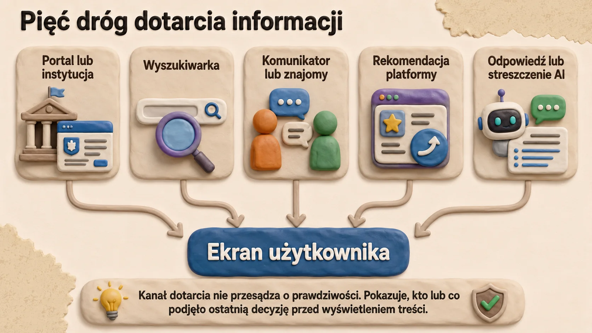
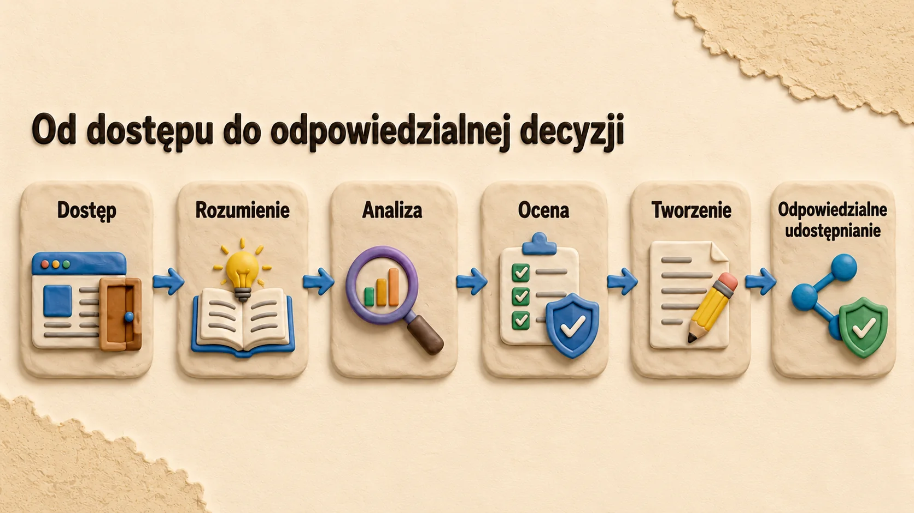
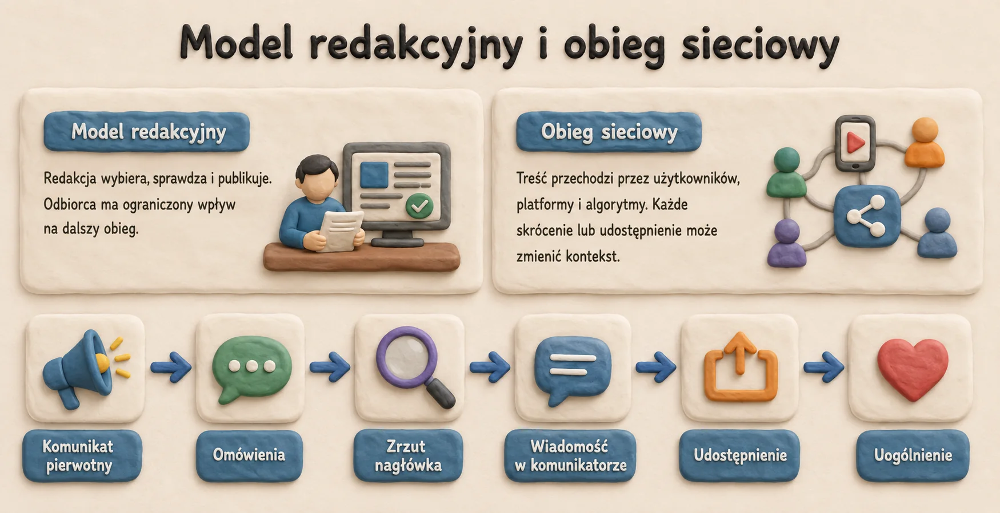
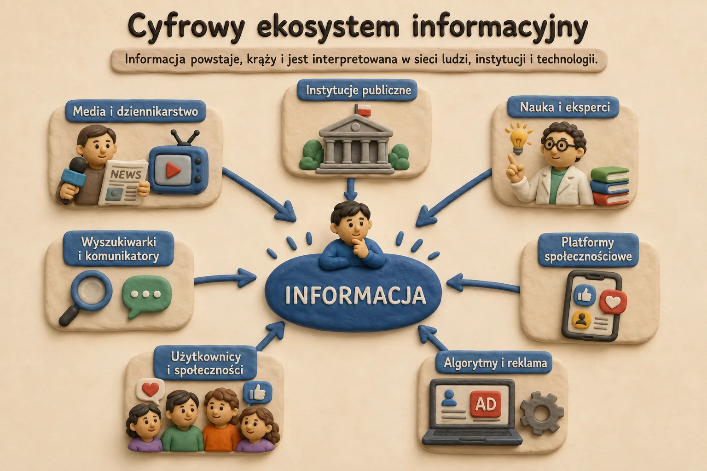
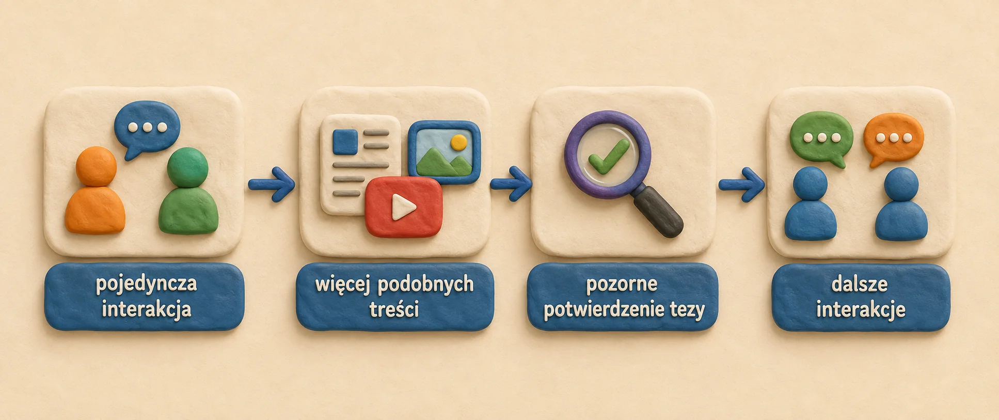

MODUŁ 1 · 10 BLOKÓW
Edukacja medialna w epoce cyfrowej
Środowisko informacyjne, platformy, algorytmy i sztuczna inteligencja
Pytanie przewodnie: Jak działa środowisko informacyjne i dlaczego widzę właśnie tę treść?
Moduł 1 · 6 min
1. Otwarcie kursu: informacja nie dociera neutralnym kanałem

Informacje powstają i krążą dziś w wielu kanałach jednocześnie. Odbieramy je w prasie, radiu i telewizji, lecz równie często trafiamy na nie w mediach społecznościowych, wyszukiwarkach, serwisach wideo, komunikatorach, internetowych społecznościach oraz narzędziach wykorzystujących sztuczną inteligencję.
Edukacja medialna obejmuje zatem cały cyfrowy obieg informacji. Analizujemy autora i cel przekazu, sposób jego rozpowszechniania, decyzje platformy i algorytmu, udział systemów AI oraz reakcje użytkowników, które mogą zwiększyć zasięg materiału. Użytkownik nie pozostaje bierny: kliknięcia, czas oglądania, komentarze i udostępnienia stają się sygnałami dla platformy. Na ich podstawie system decyduje, które materiały pokaże częściej, a które ograniczy. Dlatego ocena informacji wymaga spojrzenia zarówno na sam przekaz, jak i na mechanizm jego dystrybucji.
Zakres modułu nawiązuje do inicjatywy Organizacji Współpracy Gospodarczej i Rozwoju (OECD) – PISA 2029 Media and Artificial Intelligence Literacy (MAIL). Ramy te opisują, jak odbiorcy oceniają treści cyfrowe, korzystają z platform i rozpoznają udział AI w tworzeniu oraz wyborze informacji. Moduł wykorzystuje również AILit Framework opracowany przez Komisję Europejską i OECD.
Po zakończeniu modułu uczestnik:
1wyjaśnia, czym jest edukacja medialna w środowisku cyfrowym;
2opisuje główne elementy cyfrowego ekosystemu informacyjnego;
3rozumie, jak platformy, algorytmy i systemy AI wpływają na treści widoczne w internecie;
4rozpoznaje ryzyka związane z komorami pogłosowymi, bańkami filtrującymi i personalizacją;
5analizuje własne nawyki i źródła informacji;
6łączy edukację medialną z kompetencjami w zakresie AI i krytycznym myśleniem;
7rozumie, w jaki sposób PISA 2029 MAIL i AILit opisują odpowiedzialne korzystanie z informacji;
8wprowadza zdrowsze i bardziej świadome nawyki korzystania z mediów.
Moduł 1 · 5 min
2. Czym jest edukacja medialna i informacyjna

Edukacja medialna wspiera decyzje oparte na sprawdzonych informacjach. Uczy oceny źródeł, rozpoznawania treści wprowadzających w błąd i uczestnictwa w debacie publicznej bez nieświadomego zwiększania zasięgu fałszywych przekazów.
Komisja Europejska łączy edukację medialną z krytycznym myśleniem, świadomym podejmowaniem decyzji, debatą demokratyczną oraz odpornością na dezinformację i manipulację informacją. Do współczesnych zagrożeń zalicza się między innymi traktowanie mediów społecznościowych i influencerów jako głównego źródła wiadomości, skoordynowane działania fałszywych kont, wzmacnianie przekazów przez algorytmy oraz manipulacyjne użycie generatywnej sztucznej inteligencji.
W praktyce osoba korzystająca z mediów powinna umieć odpowiedzieć na następujące pytania:
- Kto stworzył tę wiadomość?
- Dlaczego powstała?
- Jakie dowody potwierdzają przedstawioną tezę?
- Jaką emocję przekaz próbuje wywołać?
- Jakich informacji brakuje?
- Kto zyskuje, gdy uwierzę w tę treść lub ją udostępnię?
- W jaki sposób treść do mnie dotarła?
- Czy wybrałem ją sam, czy podsunęła ją osoba, platforma albo algorytm?
- Czy AI mogła ją wygenerować, zmienić, streścić lub polecić?
Sposób korzystania z informacji wpływa na decyzje, relacje, poczucie bezpieczeństwa i jakość rozmowy publicznej. Z tego powodu edukacja medialna wiąże się z krytycznym myśleniem, obywatelstwem cyfrowym, uczestnictwem demokratycznym oraz dobrostanem psychicznym.
Edukacja medialna obejmuje wyszukiwanie, rozumienie, analizowanie, ocenianie, tworzenie i odpowiedzialne udostępnianie treści. W środowisku cyfrowym wymaga również znajomości mechanizmów, które decydują o widoczności i obiegu informacji, w tym:
- sposobu działania platform cyfrowych;
- mechanizmów polecania treści przez algorytmy;
- wpływu mediów społecznościowych na uwagę i emocje;
- sposobu, w jaki narzędzia AI generują, streszczają lub tłumaczą informacje;
- mechanizmów rozpowszechniania błędnych i fałszywych informacji;
- sposobów manipulowania odbiorem za pomocą obrazów, nagrań, nagłówków i danych statystycznych;
- wpływu aktywności online na debatę publiczną.
UNESCO – Organizacja Narodów Zjednoczonych do spraw Oświaty, Nauki i Kultury – opisuje edukację medialną i informacyjną jako zestaw kompetencji potrzebnych do świadomego poruszania się w środowisku komunikacyjnym. W tym ujęciu obejmuje ona pracę z informacją, sztuczną inteligencję, obywatelstwo cyfrowe, przeciwdziałanie dezinformacji i krytyczne myślenie.
Moduł 1 · 6 min
3. Od modelu redakcyjnego do obiegu sieciowego

A. Od modelu redakcyjnego do obiegu sieciowego
Przez wiele lat informacje docierały do odbiorców głównie przez prasę, radio i telewizję. Redakcje wybierały tematy, ustalały ich kolejność, sprawdzały materiały i ponosiły odpowiedzialność za publikację. System ten nie usuwał błędów, manipulacji ani stronniczości, ale wprowadzał procedury redakcyjne, przypisywał odpowiedzialność autorowi i wydawcy oraz umożliwiał opublikowanie sprostowania.
Internet i media społecznościowe zmieniły ten model. Publikowanie przestało być domeną zawodowych redakcji. Każdy użytkownik może dziś stworzyć materiał, skomentować wydarzenie i przekazać treść dużej liczbie osób. Zwiększyło to dostęp do informacji, liczbę perspektyw i możliwość szybkiego relacjonowania zdarzeń. Jednocześnie osłabiło znaczenie wcześniejszej selekcji redakcyjnej.
Treść może osiągnąć duży zasięg przed ustaleniem autora, źródła i kontekstu. O jej widoczności decydują już nie tylko redaktorzy, lecz również systemy rekomendacyjne, popularne profile oraz reakcje użytkowników.
| Media tradycyjne | Media cyfrowe |
|---|---|
| Przekaz głównie od jednego nadawcy do wielu odbiorców. | Wielu użytkowników jednocześnie tworzy, komentuje i rozpowszechnia treści. |
| Selekcję prowadzą redakcje i wydawcy. | Widoczność zależy od platform, rekomendacji i aktywności użytkowników. |
| Odbiorca jest przede wszystkim czytelnikiem, słuchaczem lub widzem. | Odbiorca jest również twórcą, komentatorem i dystrybutorem. |
| Odpowiedzialność jest przypisana autorowi i wydawcy. | Odpowiedzialność rozkłada się między twórców, użytkowników i platformy. |
B. Wiele kanałów, różne warunki odbioru
Ta sama wiadomość może pojawić się jako artykuł, krótki film, mem, nagranie głosowe, relacja świadka albo wiadomość przesłana w zamkniętej grupie. Format wpływa na ilość dostępnego kontekstu, tempo reakcji oraz możliwość dotarcia do materiału pierwotnego.
| Kanał lub format | Charakterystyczne warunki odbioru |
|---|---|
| Relacje i media społecznościowe | Pierwsze informacje mogą być szybkie, ale niepełne i pozbawione szerszego kontekstu. |
| Krótkie materiały wideo | Fragment wypowiedzi lub zdarzenia może zmieniać znaczenie pełnego materiału. |
| Komunikatory i zamknięte grupy | Zaufanie do osoby przesyłającej wiadomość może zastąpić ocenę pierwotnego źródła. |
| Memy i treści wirusowe | Humor i skrót ułatwiają zapamiętanie przekazu, ale mogą utrwalać uproszczenia i stereotypy. |
| Treści tworzone z pomocą AI | Profesjonalny wygląd materiału nie potwierdza jego autentyczności ani poprawności. |
| Podcasty i newslettery | Regularny kontakt z autorem może zwiększać zaufanie, które nie zawsze odpowiada jego kompetencjom. |
C. Odbiorca staje się prosumentem
W środowisku cyfrowym użytkownik nie pozostaje biernym odbiorcą. Może jednocześnie czytać, komentować, tworzyć i rozpowszechniać treści. Z tego powodu określa się go czasem jako prosumenta – osobę łączącą funkcję konsumenta i producenta informacji.
Jedna osoba może w ciągu kilku minut pełnić kilka ról: obserwatora, komentatora, autora, dystrybutora oraz źródła danych. Kliknięcia, reakcje, czas oglądania i historia wyszukiwania dostarczają platformom informacji potrzebnych do personalizacji.
Udostępnienie nie jest neutralną czynnością techniczną. Zwiększa zasięg materiału, niezależnie od tego, czy został on sprawdzony. Krytyczny komentarz również może podnieść widoczność posta, ponieważ system odczytuje aktywność jako zainteresowanie.
D. Nowy podział odpowiedzialności
W tradycyjnym modelu większa część odpowiedzialności spoczywała na redakcji. W środowisku cyfrowym jest ona rozproszona. Autor odpowiada za treść, platforma za zasady dystrybucji, a użytkownik za sposób reagowania i dalsze udostępnianie.
Nie oznacza to, że każdy odbiorca musi samodzielnie prowadzić pełne dochodzenie fact-checkingowe. Powinien jednak rozpoznawać, kiedy materiał wymaga ostrożności i kiedy nie należy zwiększać jego zasięgu bez sprawdzenia.
Moduł 1 · 6 min
4. Cyfrowy ekosystem informacyjny

Cyfrowy ekosystem informacyjny to sieć osób, instytucji, platform, technologii i praktyk, za pomocą których informacje powstają, krążą i są interpretowane.
| Element | Funkcja w ekosystemie informacyjnym |
|---|---|
| Redakcje i organizacje medialne | Przygotowują oraz rozpowszechniają materiały dziennikarskie. |
| Platformy społecznościowe | Umożliwiają tworzenie, udostępnianie, komentowanie i ocenianie treści. |
| Wyszukiwarki | Porządkują wyniki i decydują o kolejności dostępu do informacji. |
| Influencerzy i twórcy | Wpływają na opinie, trendy, wybory i zachowania odbiorców. |
| Komunikatory | Przenoszą informacje w sieciach prywatnych lub częściowo zamkniętych. |
| Algorytmy | Wybierają, szeregują, polecają albo ukrywają treści. |
| Systemy AI | Generują, streszczają, klasyfikują, tłumaczą i polecają informacje. |
| Reklamodawcy | Zwiększają widoczność przekazów przez płatną promocję. |
| Użytkownicy | Odbierają, tworzą, komentują i udostępniają treści. |
| Fact-checkerzy | Weryfikują twierdzenia i badają przekazy wprowadzające w błąd. |
| Instytucje publiczne | Publikują komunikaty urzędowe, dane i dokumenty. |
| Źródła naukowe i akademickie | Dostarczają wiedzy opartej na badaniach i metodach naukowych. |
OECD wskazuje, że użytkownicy korzystają z platform medialnych i systemów AI, aby wyszukiwać wiadomości, uczyć się, kontaktować i współpracować. Jednocześnie treści internetowe mogą być nierzetelne, jednostronne, plagiatowane lub mylące, a generatywna AI przyspiesza ich produkcję.
Analiza ekosystemu pozwala ustalić, gdzie powstał błąd, kto zwiększył zasięg materiału i dlaczego treść słabej jakości dotarła do szerokiego grona odbiorców.
Moduł 1 · 11 min
5. Algorytmy, personalizacja i architektura uwagi
Dwie osoby, dwa internety
Dłuższe poradniki, dokumenty pierwotne, przewodniki o odpowiedzialnym użyciu AI.
Krótkie alarmistyczne filmy, sensacyjne przykłady i kolejne treści wywołujące oburzenie.
Różnica może wynikać z czasu oglądania, wyszukiwań, reakcji, zapisów i pomijania treści.

A. Jak system wybiera treści
Dwie osoby korzystające z tej samej platformy nie muszą widzieć tych samych materiałów. Systemy rekomendacyjne porządkują ogromną liczbę postów, filmów i reklam, przewidując, co może zainteresować konkretnego użytkownika.
Algorytm można rozumieć jako zestaw reguł i obliczeń służących określonemu zadaniu. W mediach społecznościowych zadaniem tym jest między innymi ustalenie, które treści mogą zatrzymać uwagę, skłonić do obejrzenia filmu albo wywołać reakcję.
System nie ocenia automatycznie prawdziwości materiału. Analizuje przede wszystkim prawdopodobieństwo kliknięcia, obejrzenia, komentarza, polubienia lub udostępnienia. Dzięki temu platforma tworzy indywidualny strumień treści.

Personalizacja jest użyteczna, ponieważ pomaga odnaleźć materiały zgodne z zainteresowaniami i ogranicza przypadkowość przekazu. Ryzyko pojawia się wtedy, gdy spersonalizowany strumień zostaje uznany za pełny i neutralny obraz rzeczywistości.
Materiał wideo
Jak działają algorytmy Facebooka?
Zwróć uwagę, jakie zachowania użytkownika wpływają na kolejność publikacji i dlaczego rekomendowany strumień nie przedstawia całego zbioru dostępnych informacji.
Adres materiału: https://www.youtube-nocookie.com/embed/GLzHystd0Y4?start=9&rel=0
B. Jakie sygnały wpływają na rekomendacje
Platformy korzystają z wielu sygnałów. Pojedyncze kliknięcie nie musi przesądzać o przyszłych rekomendacjach, ale powtarzające się zachowania pozwalają systemowi budować coraz dokładniejszy profil zainteresowań.
| Sygnał | Co może z niego wywnioskować system |
|---|---|
| Czas oglądania | Materiał zatrzymał uwagę, nawet jeśli wywołał sprzeciw. |
| Kliknięcia, polubienia i komentarze | Temat wzbudza zainteresowanie i może skłonić do dalszej aktywności. |
| Historia wyszukiwania i oglądania | Użytkownik prawdopodobnie chce widzieć podobne materiały. |
| Obserwowane konta i grupy | System rozpoznaje preferowane środowiska, tematy i autorów. |
| Aktywność podobnych użytkowników | Materiał może zainteresować osobę o zbliżonym profilu zachowania. |
| Dane o urządzeniu i lokalizacji | Treść może zostać dopasowana do języka, miejsca i sytuacji użytkownika. |
C. Jak powstaje algorytmiczna pułapka
Jednorazowe zainteresowanie kontrowersyjnym tematem może uruchomić serię podobnych rekomendacji. Odbiorca widzi wtedy wiele materiałów przedstawiających zbliżoną tezę i może uznać ich częstotliwość za dowód popularności lub prawdziwości.
W ten sposób system może wzmacniać błąd potwierdzenia i efekt powtarzania. Nie musi celowo promować fałszu. Wystarczy, że skutecznie przewiduje treści zatrzymujące uwagę.
Duża liczba wyświetleń, polubień i komentarzy informuje o zainteresowaniu materiałem, a nie o jakości dowodów. Wysoki zasięg może wynikać z kontrowersyjności, reklamy, krytycznych reakcji, aktywności botów albo skoordynowanego udostępniania.
D. Wpływ na obraz rzeczywistości
Największym zagrożeniem nie zawsze jest uwierzenie w pojedynczą fałszywą wiadomość. Problemem może być stopniowe zawężenie zakresu źródeł, argumentów i perspektyw. Użytkownik poznaje coraz więcej materiałów jednej strony i coraz mniej treści, które mogłyby skorygować jego obraz sytuacji.
Personalizacja nie oznacza całkowitego odcięcia od innych poglądów. Częściej zmienia proporcje widocznych materiałów. Pewne stanowiska są wyświetlane często, inne sporadycznie, a część niemal wcale.
E. Jak odzyskać większą kontrolę
- nie opieraj wiedzy wyłącznie na kanale rekomendowanym;
- samodzielnie wyszukuj informacje i odwiedzaj wybrane źródła;
- korzystaj z widoku publikacji obserwowanych kont, gdy platforma go udostępnia;
- zarządzaj historią oglądania, wyszukiwania i tematami rekomendacji;
- używaj funkcji „Nie interesuje mnie”, wyciszania i ograniczania powiadomień;
- regularnie sięgaj po źródła prezentujące inne perspektywy.
Moduł 1 · 5 min
6. Bańka filtrująca i komora pogłosowa

Bańka filtrująca i komora pogłosowa prowadzą do ograniczenia różnorodności informacji, ale powstają w inny sposób.
| Zjawisko | Jak powstaje | Możliwy skutek |
|---|---|---|
| Bańka filtrująca | Platforma dobiera treści na podstawie wcześniejszej aktywności użytkownika. | Niektóre perspektywy pojawiają się często, inne sporadycznie albo wcale. |
| Komora pogłosowa | Ludzie skupiają się w środowiskach, w których dominują podobne poglądy i źródła. | Powtarzane przekonania wzajemnie się wzmacniają, a krytyka z zewnątrz jest odrzucana. |
Oba mechanizmy mogą działać jednocześnie. Algorytm poleca użytkownikowi grupę zgodną z jego zainteresowaniami, a aktywność w tej grupie dostarcza kolejnych sygnałów prowadzących do podobnych rekomendacji.
Ryzyko nie polega wyłącznie na całkowitym odcięciu od innych poglądów. Częściej zmieniają się proporcje widocznych treści. Użytkownik może wtedy uznać swój indywidualny strumień za reprezentatywny dla całego społeczeństwa.
Moduł 1 · 6 min
7. Sztuczna inteligencja w cyklu życia informacji

Sztuczna inteligencja uczestniczy w tworzeniu, wyborze i objaśnianiu informacji. Jej działanie często pozostaje niewidoczne, choć wpływa na treść komunikatu oraz kolejność materiałów wyświetlanych użytkownikowi.
Systemy AI mogą:
- generować teksty;
- tworzyć obrazy;
- produkować syntetyczny dźwięk i film;
- streszczać artykuły;
- tłumaczyć treści;
- polecać filmy i posty;
- ustalać kolejność wyników wyszukiwania;
- personalizować kanały treści;
- moderować komentarze i publikacje;
- wykrywać wzorce w zachowaniu użytkowników;
- tworzyć materiały realistyczne, lecz niezgodne z faktami.
AILit Framework opisuje potrzebę rozumienia sposobu działania AI, jej wpływu społecznego i zasad etycznego użycia. W edukacji medialnej szczególnego znaczenia nabierają trzy funkcje AI:
1. AI jako twórca treści
AI potrafi wygenerować przekonujący tekst, obraz, film i nagranie głosu. Ułatwia pracę twórczą oraz naukę, lecz może też służyć do wytwarzania fikcyjnych dowodów, fałszywych profili i materiałów podszywających się pod rzeczywistość.
2. AI jako system polecający treści
Systemy oparte na AI ustalają, co pojawi się w kanale użytkownika, wynikach wyszukiwania lub na liście rekomendacji. Wpływają więc na widoczność treści, nawet gdy użytkownik nie zdaje sobie z tego sprawy.
3. AI jako interpretator treści
Narzędzia AI streszczają, tłumaczą i objaśniają informacje. Mogą jednak popełniać błędy, pomijać kontekst, mieszać źródła albo powtarzać uprzedzenia obecne w danych.
Moduł 1 · 7 min
8. PISA 2029 MAIL i AILit jako rama całego kursu

A. Dwie ramy porządkujące kompetencje
PISA 2029 MAIL oraz AILit opisują umiejętności potrzebne do świadomego korzystania z mediów i systemów sztucznej inteligencji. W tym kursie nie są narzędziami oceniania uczestników, lecz punktem odniesienia przy projektowaniu treści, ćwiczeń i nawyków.
MAIL łączy kompetencje medialne z rozumieniem wpływu AI na tworzenie, wybór i dystrybucję treści. AILit koncentruje się szerzej na rozumieniu systemów AI, krytycznej ocenie ich wyników, odpowiedzialnym użyciu oraz współtworzeniu rozwiązań.
| Rama | Na czym koncentruje uwagę | Przełożenie na kurs |
|---|---|---|
| PISA 2029 MAIL | Ocena wiarygodności, celu i jakości treści medialnych oraz rozumienie wpływu platform i AI. | Sprawdzanie źródeł, rozpoznawanie manipulacji, analiza sposobu dystrybucji informacji. |
| AILit | Rozumienie działania AI, krytyczna ocena jej wyników, odpowiedzialne użycie i współtworzenie rozwiązań. | Weryfikowanie odpowiedzi AI, rozpoznawanie ograniczeń, ochrona danych i odpowiedzialność użytkownika. |
B. Kompetencje MAIL w praktyce
Kompetencje medialne ujawniają się w konkretnych sytuacjach: gdy wiadomość dociera przez komunikator, film zostaje wyrwany z kontekstu, wykres pomija część danych albo popularny post nie wskazuje źródła.
| Sytuacja | Umiejętność | Praktyczny cel |
|---|---|---|
| Wiadomość pochodzi od znajomej osoby. | Oddzielenie zaufania do nadawcy od oceny pierwotnego źródła. | Nie przenosić zaufania automatycznie na treść. |
| Materiał ma tysiące reakcji. | Rozróżnienie popularności od wiarygodności. | Ocenić dowody, a nie wskaźniki zasięgu. |
| Krótki film przedstawia sensacyjne twierdzenie. | Poszukiwanie pełnego nagrania, daty i kontekstu. | Ustalić, czy fragment nie zmienia znaczenia. |
| Platforma pokazuje wiele podobnych publikacji. | Rozpoznanie wpływu personalizacji na obraz rzeczywistości. | Wyjść poza rekomendowany strumień. |
C. Cztery obszary AILit
Praktyczne korzystanie z AI można uporządkować w czterech obszarach. Nie chodzi o znajomość technicznych szczegółów każdego modelu, lecz o rozumienie roli użytkownika i konsekwencji decyzji.
- Rozumienie: rozpoznaj, co system potrafi, na jakiego rodzaju danych opiera działanie i czego nie może zagwarantować.
- Ocena: sprawdź źródła, pominięcia, nieścisłości, możliwe uprzedzenia oraz poziom pewności odpowiedzi.
- Użycie: dobieraj narzędzie do zadania, chroń dane wrażliwe i nie przekazuj systemowi informacji, których nie powinien przetwarzać.
- Tworzenie: jasno oznaczaj udział AI, kontroluj wynik i nie przypisuj mu większej wiarygodności, niż wynika z dowodów.
D. AI jako pomocnik, nie źródło pierwotne
Odpowiedź AI może pomóc uporządkować temat, przygotować pytania, streścić dokument albo wskazać możliwe kierunki poszukiwań. Nie powinna jednak zastępować dokumentu, danych, nagrania lub komunikatu, na którym opiera się ważna decyzja.
Przy sprawach zawodowych, prawnych, finansowych, zdrowotnych lub społecznych użytkownik powinien dotrzeć do materiału pierwotnego i samodzielnie sprawdzić, czy potwierdza on wygenerowaną odpowiedź.
Moduł 1 · 6 min
9. Diagnoza wejściowa: mój sposób docierania do informacji
Ćwiczenia pomogą Ci rozpoznać, skąd docierają informacje, jak często sprawdzasz ich pochodzenie oraz w których sytuacjach najłatwiej reagujesz automatycznie. Odpowiadaj zgodnie z rzeczywistym sposobem korzystania z mediów.
Ćwiczenie 1. Jak docierały do mnie informacje?
Cel: rozpoznanie proporcji między aktywnym wyszukiwaniem a odbieraniem treści podsuniętych przez platformy, inne osoby lub narzędzia AI.
Zaznacz wszystkie kanały, przez które w ostatniej dobie dotarły do Ciebie wiadomości, komentarze, filmy lub artykuły.
Ćwiczenie 2. Mój ekosystem informacyjny
Cel: rozpoznanie dominujących grup źródeł oraz nawyków związanych z porównywaniem informacji i docieraniem do materiałów pierwotnych.
Zaznacz grupy źródeł, z których korzystasz regularnie.
Ćwiczenie 3. Mój plan poprawy nawyków medialnych
Cel: wybór maksymalnie trzech działań, które możesz zastosować w codziennym korzystaniu z informacji.
Wybrano 0 z maksymalnie 3 działań.
Moduł 1 · 5 min
10. Zamknięcie modułu i przejście do manipulacji
Pięć pytań przed przejściem do analizy manipulacji
- Źródło: Kto stworzył informację? Czy autor lub organizacja są rozpoznawalni? Jakie mają kompetencje? Jaki może być cel publikacji?
- Przekaz: Jaka jest główna teza? Jakie dowody ją wspierają? Czy język jest neutralny, czy emocjonalny? Czego nie pokazano?
- Platforma: Gdzie zobaczyłem treść? Dlaczego platforma mogła mi ją wyświetlić? Czy była wyszukana, polecona, udostępniona lub promowana?
- Sztuczna inteligencja: Czy AI mogła stworzyć, zmienić, streścić lub polecić materiał? Czy powinienem dotrzeć do źródła pierwotnego?
- Moja reakcja: Jaką emocję wywołuje przekaz? Czy akceptuję go dlatego, że potwierdza moje poglądy? Czy odczuwam presję natychmiastowego udostępnienia?
Jakość informacji, demokracja i dobrostan – pomost
Jakość środowiska informacyjnego wpływa na życie społeczne, relacje i samopoczucie odbiorców. Nierzetelne lub celowo zmanipulowane przekazy mogą osłabiać zaufanie, zwiększać konflikty oraz skłaniać do działań opartych na fałszywych przesłankach. Z kolei nadmiar bodźców i ciągła presja reagowania utrudniają spokojną ocenę materiału.
W tym module zależności te zostają jedynie zasygnalizowane. Polityka, polaryzacja, wartości demokratyczne i odpowiedzialność w debacie publicznej są rozwijane w Module 4. Przeciążenie informacyjne, stres, doomscrolling i zdrowe nawyki korzystania z mediów należą do Modułu 5.
Słownik nowych pojęć
- Edukacja medialna
- Zdolność do docierania do przekazów medialnych, analizowania ich, oceniania, tworzenia i odpowiedzialnego udostępniania.
- Ekosystem informacyjny
- Sieć osób, platform, instytucji i technologii uczestniczących w tworzeniu oraz rozpowszechnianiu informacji.
- Algorytm
- Zestaw reguł lub procesów używanych przez system cyfrowy do sortowania, porządkowania i polecania treści.
- Personalizacja
- Dopasowanie treści cyfrowych do zachowania, preferencji lub profilu użytkownika.
- Komora pogłosowa
- Środowisko, w którym użytkownik spotyka głównie poglądy podobne do własnych.
- Bańka filtrująca
- Spersonalizowane środowisko informacyjne, które może ograniczać kontakt z różnorodnymi perspektywami.
- Treść wygenerowana przez AI
- Tekst, obraz, dźwięk lub film utworzony przez system sztucznej inteligencji.
- Treść wybrana przez AI
- Materiał uporządkowany, sklasyfikowany lub polecony przez system oparty na AI.
- Misinformation
- Fałszywa lub niedokładna informacja rozpowszechniana bez koniecznej intencji wyrządzenia szkody.
- Dezinformacja
- Fałszywa lub myląca informacja stworzona albo udostępniona celowo, aby oszukać odbiorców.
- Krytyczne myślenie
- Analizowanie, ocenianie i interpretowanie informacji przed sformułowaniem wniosku.
- Obywatelstwo cyfrowe
- Odpowiedzialne, etyczne i aktywne uczestnictwo w środowisku cyfrowym.
Najważniejsze wnioski
- Media cyfrowe zmieniły odbiorcę w aktywnego uczestnika obiegu informacji.
- Widoczność treści zależy od platform, algorytmów oraz reakcji użytkowników, a nie wyłącznie od ich rzetelności.
- Personalizacja pomaga odnajdywać materiały, ale może zawężać różnorodność widocznych perspektyw.
- Bańka filtrująca wynika głównie z doboru treści przez system, a komora pogłosowa z wzajemnego wzmacniania poglądów w grupie.
- AI może tworzyć, streszczać i polecać informacje, lecz użytkownik nadal odpowiada za ich sprawdzenie i wykorzystanie.
- MAIL i AILit porządkują kompetencje potrzebne do krytycznej oceny mediów i narzędzi AI.
- Odpowiedzialne uczestnictwo wymaga świadomego udostępniania, kultury dyskusji i gotowości do poprawiania błędów.
- Ochrona uwagi i dobrostanu wspiera zdolność spokojnej analizy informacji.
Źródła i materiały do dalszej lektury
- OECD – PISA 2029 Media and Artificial Intelligence Literacy (MAIL)
- OECD i Komisja Europejska – Empowering Learners for the Age of AI
- Europejska Przestrzeń Edukacyjna – AI Literacy Framework
- Komisja Europejska – Media literacy
- UNESCO – Media and Information Literacy Curriculum
- UNESCO – Media and Information Literacy